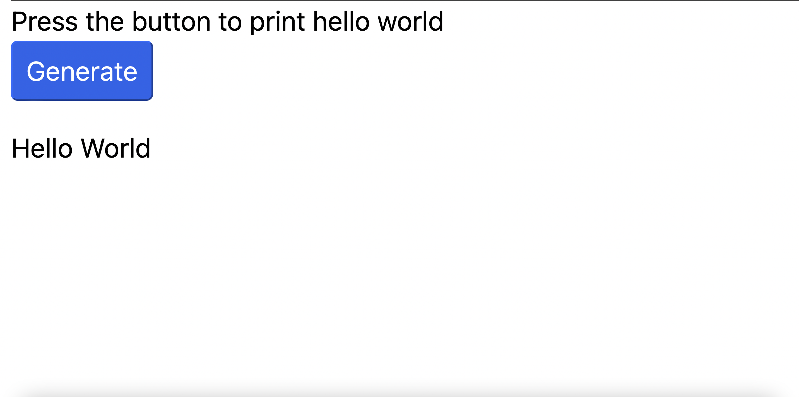
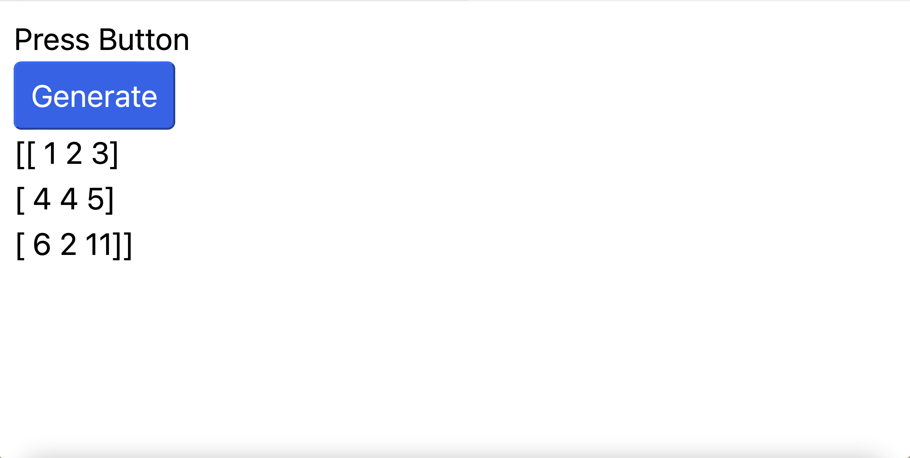
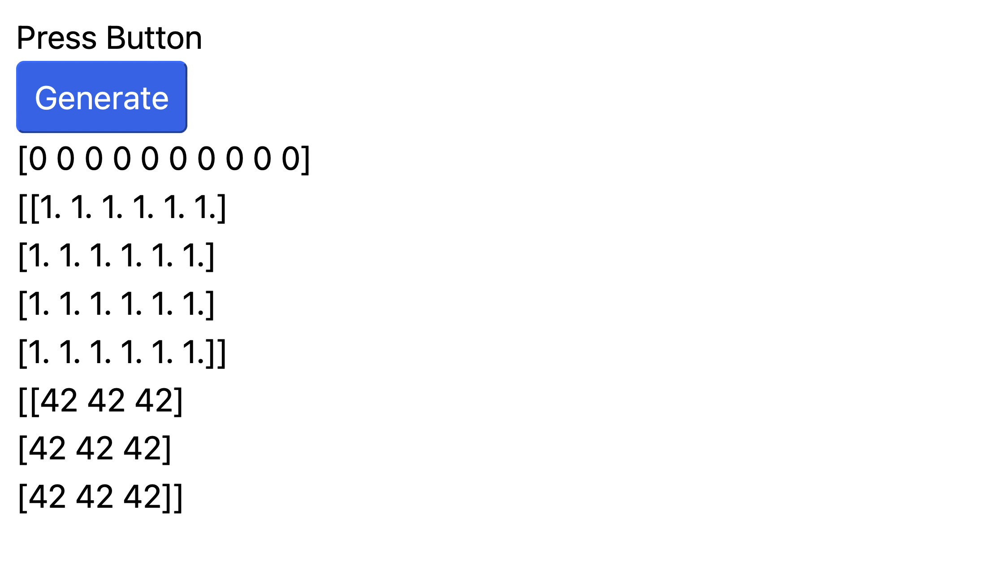
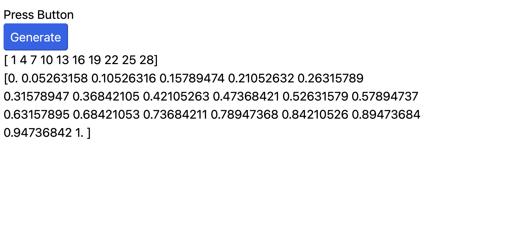
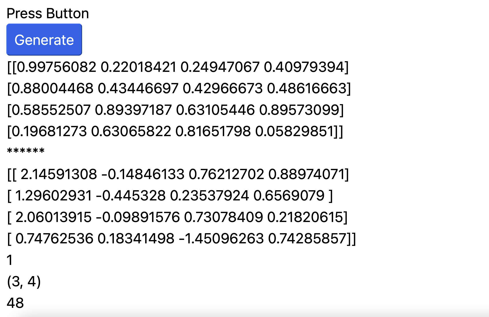
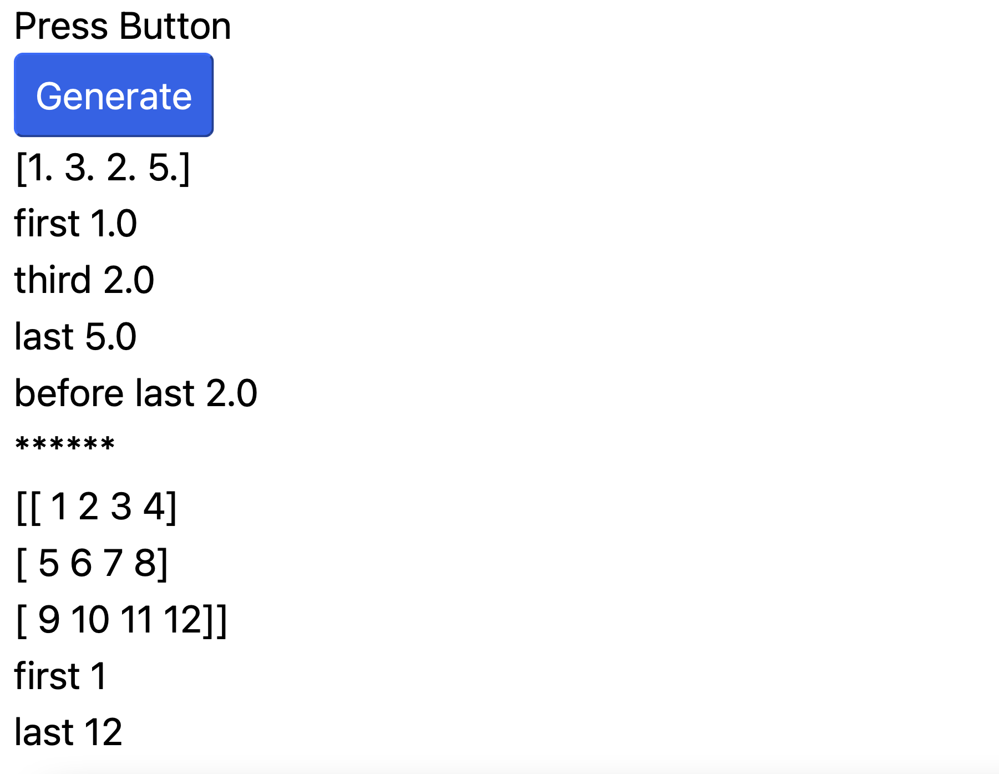
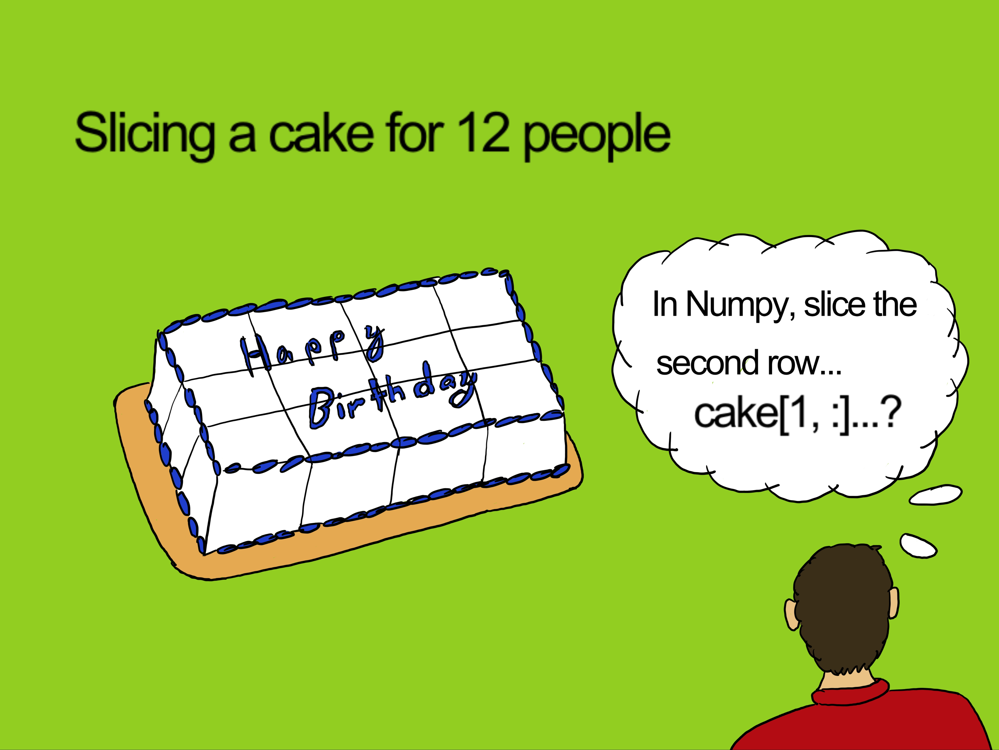
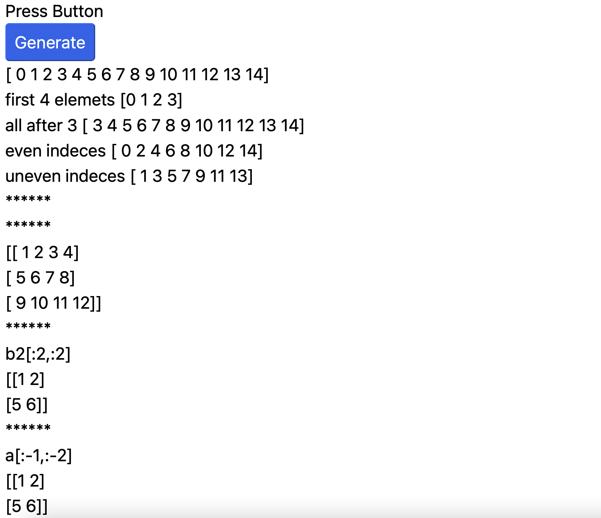

Chapter 2: Coding with HTML and PyScript
The focus of this chapter is to build up your skills before starting to implement the KNN algorithm in chapter 3. First, we will develop a simple website that uses PyScript.
This will be the equivalent of building your first Hello World application. After that, I will show you some examples of the power of PyScript by doing some
exercises which include Python and Numpy code. These exercises will gradually help you to better grasp coding in Python with Numpy, and will help you to better
understand how to run everything on the browser with PyScript.
The chapter has 2 basic sections. One section focuses on creating your first Hello World program. The second section consists of a set of exercises to get more comfortable
with Numpy and PyScript. I often give exercises like these to my machine learning students. I often recommend that they should type up the code themselves (instead
of copying) and run it line by line. I feel that by doing this one can develop a type of muscle memory. Hopefully, after doing many of these problems, you will
start to become more comfortable with how Numpy works with Python.
So, in summary, this chapter will focus on the following tasks:
- Build a Hello World program with HTML and PyScript
- Practice and appreciate the power of Numpy and PyScript
This chapter assumes that you have completed chapter 1, and that you have now completed the setup of your GitHub account and completed all other related configurations.
FTC and Amazon Disclaimer
This post/page/article includes Amazon Affiliate links to products. This site receives income if you purchase through these links. This income helps support content such as this one.
Hello World program with HTML and PyScript

The following code listing shows the entire program using HTML, PyScript, and Python. So, what is Hello World anyway? Hello World is usually the first program you write in any programming language. In this listing, I show all the code you need to run Hello World. I do this so that you can see the big picture and so that you get a sense of how big it is. Running this program will write "Hello World" to your website. The results can be seen in the figure after the listing.
The listings following the next figure in this section will focus on the different parts of the Hello World rogram. It will make it easier for me to discuss what each part is doing. Your Hello World program should look like this when you finish and run it:

In the next listing, I will only discuss the head section of the code denoted by the head tags:
The title tag
is used to
provide a title for your website and is useful for search engine indexing.
The following tag
is used to define character encoding for your
website. The next 2 lines are very important and we will be using them on all our programs. They are both provided by
the PyScript project.
The line denoted by the following tag
This tag references the stylesheet which is a file with extension .css.
This style sheet just makes our website look more slick when it is running. We could do without it or create our own. But let us just use what the PyScript
project provided. CSS files are especially formatted files where we define common things realted to style about our website like fonts, positioning, colors, etc.
The last line is for javascripts as denoted by the following tag
This tag is required to import pyscript.js. Websites can import many other code modules from the internet. This helps to extend their capabilities. So, websites import these .js files. This "pyscript.js" file will help us to run PyScript on our browser.
The following code listing shows the navbar segment. This is what provides a navigation bar at the top of the page. Here, it is used mostly for presentation. You can ignore this part or consider removing it once you understand how the code works. It is a good exercise to test your understanding. This nav bar can work in conjunction with the .css file we previously discussed.
The next listing shows the part of the Hello World code related to triggering events. There are 2 "div" tags, one "p" tag, and one "button" tag.
The "p"tag defines paragraphs in your website. You can reference the \textbf{p} tag by its id equal "current-val". In general, tags can have ids
so they can be referenced. As we will see later, we can call our tags by \textbf{id} and write something to them. The \textbf{div} with \textbf{id=test-output} can
be used in the same way. Notice the first "div" does not have an \textbf{id} and it is just used to write out some instructions to the website once it is
running.
Okay, I saved the best for last. The button tag "button" is used to create a button on your website. When you press the button, it will call
the function name "my_gen_function()". Notice that it is associated with the "py-click" option. This means that this is a function
written in Python. And just like that, this is how from HTML, we can call Python code. Now all that remains is to encapsulate our python code. We will see that
in the next code listing.
We have now made it to PyScript! In the next code segment you can see that we have made it to the section we wanted to get to. This section is encapsulated within the tag:
This section includes a div
with "id" equal to "mpl". Similar
to the previous divs, we can select this div by id and write data to it. In fact, we will write Hello World to this div, but you can write to the other
divs as well and I recommend you try to do just that as an exercise.
The next part in the code is denoted by the
You can use this to add any packages you want into the list packages = []. In the future, we will
add packages like Numpy, etc. Finally, we have made it to the tag where we actually write our Python code.
The tag is called
It is
a script tag just like for JavaScript but with type "py", which you guessed it, stands for Python. And inside this tag we can define all the python code
we want. Here, we define the function "my_gen_function()" that is invoked by pressing the button. The rules of Python apply here such as
indentation. Make sure all your Python code here has the exact same indentation or you will have errors and will need to debug. The Python syntax is the same.
PyScript provides keywords that you can use in the Python code so that Python can interact with the HTML and the website itself. One such keyword is "Element".
Notice here that "Element" grabs the div with id=mpl and assigns to its "innerText" attribute the text "Hello World". And that is it. This is how
PyScript and HTML work together to run Python code on the browser. I recommend that you now go try what you learned and build and deploy your Hello World
program from your own repo.
That concludes the Hello World program discussion. Even though most of our websites going forward will include these same sections, I will not discuss or describe them again. Instead, going forward I will only focus on the PyScript section and specifically in the Python or Numpy code. I will describe any new PyScript or HTML elements as needed.
The Power of Numpy and PyScript
In this section, I will present some of the most useful techniques used in this book, or in the deep learning field as a whole, for dealing with data.
In general, we want to be very efficient in our processing of the data so we do not use Python lists and “for” loops for everything. Instead, we use Numpy
to process tensors in very efficient and clever ways. Numpy borrows many techniques from a field of mathematics called linear algebra. Numpy arrays of different
dimensions (scalars, vectors, matrices, hyper-matrices) are more generally referred to as tensors.
The advantage of this approach is that we can perform a lot of linear algebra based math operations like the matrix multiplication, the transpose, etc.
on our data using Python’s Numpy library.
I will not go into any linear algebra theory. Instead, the best way to learn about this approach for AI projects is to do a series of exercises. Eventually
you can study the math background if you want to. And because you already have examples of its use, you will be more motivated to study it. I will start with
simple examples of Numpy array operations and then move to more complex operations. Along the way, I will point out some terminology or concepts from math.
As previously described, this section assumes you have completed chapter 1. In this chapter, I will mainly focus on describing the Python and Numpy code that goes
inside the PyScript section of the HTML code. For a few examples, I will include the whole HTML code, but as we move through the material, I will include less and
less of the HTML and just focus on the specific parts we want to cover.
Okay, so let’s get started. In the following code listing we import numpy as np. Then we initialize a Numpy array with values [4 5 2 6 8]. The statement
"text = str(a)"
converts the array to a string and we can finally display it on the website using the statement:
and the first numpy example is
In the next code listing we do the same as before but we initialize the array to type float. Notice that we provide a Python list and change the data type with the "dtype" field.
You can see that the values can now have decimal points. This gives us [1. 3. 2. 5.] and pressing the button calls the function \textbf{my\_gen\_function} which
runs the Numpy code. Again, the array is converted to a string and assigned to the div with \textbf{id} equal to \textbf{mpl} using the following code segment:
The following figure shows the result of running this in the browser.
Going forward, to reduce copying too much repetitive code, I will only discuss and show the parts inside the PyScript section denoted by:
Everything else should be the same.
A Numpy matrix (2D np array) can be declared like so:
This Python list can be converted to a Numpy array using "np.array()". The following listing shows the code sequence and how to assign it to the "mpl" div.
Running this code gives us a 3x3 matrix as can be seen in the following figure.

Numpy has special functions to initialize a matrix. In the next code listing, three Numpy tensors are created.
The first generates a Numpy array of size 10 made up of all zeros like so:
[0 0 0 0 0 0 0 0 0 0]
This is achieved with the following code segment:
b1 = np.zeros(10, dtype=int)
The second tensor consists of a 4x6 matrix of all ones. This is achieved with the Numpy statement:
b2 = np.ones((4, 6), dtype=float)
The final tensor is a 3x3 matrix where all the values are 42. This is achieved with the statement:
b3 = np.full((3, 3), 42)
Notice that the code now includes 3 div tags with ids: "mpl1", "mpl2", and "mpl3". The 3 tensors are assigned to each of these div tags, respectively. The results can be seen in the following figure.

Sometimes we need Numpy arrays with different data in them. Numpy has quick ways of creating arrays with different data in them. The \textbf{np.arange} function is
useful for this. For example, in the following listing, the code creates a Numpy array with 10 values in the range from 1 to 28 with a step of size 3 like so:
[1 4 7 10 13 16 19 22 25 28]
The function "np.linspace" is another way of generating Numpy arrays with data in them. Here, we generate 20 data points from 0 to 1 spaced by a step size of
around 0.05.
The results of using "np.arange()"and "np.linspace()" can be seen in the following figure. Go ahead and calculate the differences between each number and the next and you will find that they equal the step size.

The following code listing introduces us to some of Numpy's random functions. With
np.random.random((4, 4))
we can generate random data in the form of a 4x4 matrix with random values.
If we want random data with a mean of 0 and standard deviation of 1 we can write:
np.random.normal(0, 1, (4,4))
Here, we get a 4x4 matrix of random data with mean 0 and standard deviation 1.
Finally, to get the dimensions of matrices we can use ".shape", ".ndim", ".size". In our below code listing, this is done with the following statements:
text3a = str(b3a.ndim)
text3b = str(b3b.shape)
text3c = str(b3c.size)
The result of running the previous Numpy code on the browser can be seen in the figure below. The dimensions from \textbf{.shape}, \textbf{.ndim}, and \textbf{.size} can be seen at the bottom of the figure.

Knowing how to index a Numpy array is very important. The following code listing shows different ways of indexing a Numpy array. Indexing just means extracting values from the Numpy array or matrix by index value. For example, for the vector
[1. 3. 2. 5.]
We can get the following by index:
First value 1.0
Third value 2.0
Last value 5.0
Before last value 2.0
The next code listing shows the use of indexing for each of the previously mentioned cases.
We can also index matrices. The statements
b2[0,0]} and \textbf{b2[2, -1]
are examples of indexing matrix b2 as defined in the previous code listing. The results can be seen in the following figure.

One important concept when dealing with Numpy arrays or tensors is slicing. I was almost tempted to create a section just for slicing since it is so important. However, given that it is just another Numpy operation, I decided not to do that. That being said, slicing is very important and you will use it a lot. So, instead of giving it a whole section, I decided to make it a cake. Here it is.

Slicing helps us to extract slices of data from a vector, matrix, or any other tensor, like extracting 2 middle column vectors in a matrix.
We can slice any tensor. As previously mentioned, Tensor is the generic name for an array of any dimension. From a vector to hyper dimensional matrices.
Let us do an example with a vector. Given a Numpy array \textbf{x} with 15 values like so:
[0 1 2 3 4 5 6 7 8 9 10 11 12 13 14]
How can you get the following?
a) The first 4 elemets: [0 1 2 3]
b) All values after 3: [3 4 5 6 7 8 9 10 11 12 13 14]
c) All even indeces: [0 2 4 6 8 10 12 14]
d) All uneven indeces: [1 3 5 7 9 11 13]
e) The reverse: [14 13 12 11 10 9 8 7 6 5 4 3 2 1 0]
Once you understand slicing, you will be able to do all that and it will be really easy. The following code listing shows the programming statements to do just that. And the figure after shows the results.
Note: Whenever we want the last value of a matrix, vector, or tensor, we can just use the -1 index.
As we can see in the previous code listing, the answers are as follows:
a) For the first 4 elements we can use: \textbf{b1[:4]} where the colon indicates range from blank (the start) to 4.
b) For all after 3 we can use: \textbf{b1[3:]} where 3 is the start and the colon indicates range until blank (the end).
c) For all even indeces we can use \textbf{b1[::2]} where the first colon indicates the range from start to finish. The second colon indicates a step of 2.
d) For all uneven indeces we can use \textbf{b1[1::2]} where this is the same as before but the start is at 1 instead of zero. Remember that in Python, array indeces start at 0.

For the matrix \textbf{b2} in our previous code listing, we can slice it with \textbf{b2[:-1,:-2]} and get a 2x2 matrix as can be seen in the Numpy Slicing figure.
Solve these Problems
Okay, so I have given you a lot of examples. As this is a project and work book, how about you try to implement a few Numpy and PyScript problems on your own. For the following I will provide the problem description and the working Python and Numpy code. What you have to do is to run it on your Browser using PyScript and make sure it works correctly as required by the problem.
Problem 1
In the following code listing we want to slice the second column (column 1). The statement
a[:, 1]
should do it, and the answer should be:
[2 6 10]
Go ahead and deploy this to your GitHub repo.
Problem 2
In the following code listing we want to slice the second row (row 1). The statement
a[1, :]
should do it, and the answer should be:
[5, 6, 7, 8]
Go ahead and deploy this to your GitHub repo.
Problem 3
Okay, that is it for slicing. Now let us try a few other things. The next problem is about reshaping. In the following code listing,
we first initialize a vector "a" with 9 values like so
[1 2 3 4 5 6 7 8 9]
We then reshape it into \textbf{"b"} with \textbf{a.reshape( (3,3) )}. This gives us the matrix:
Go ahead and deploy this to your GitHub repo.
Problem 4
Besides using the reshaping operation, we can sometimes use \textbf{np.newaxis}. The \textbf{np.newaxis} function is critical when we wish to make a row vector into a column vector. The \textbf{np.newaxis()} function is used extensibly in Numpy for broadcasting operations (Advanced topic not needed for this project). An example of creating a new axis can be seen in the code listing below. Try it out. Go ahead and deploy this to your GitHub repo.
Problem 5
Another important Numpy array or tensor technique is concatenation. Natural Language Processing (NLP) approaches use concatenation extensively on some of the models. For example, for language translation and language generation. In the following code listing we see how we can use concatenation with the Numpy function \textbf{np.concatenate()}. Try it out. Go ahead and deploy this to your GitHub repo.
Problem 6
An example of concatenation with matrices can be seen in the code listing below. Notice the use of \textbf{axis=0} to indicate on what dimension to concatenate. Try it out. Go ahead and deploy this to your GitHub repo.
Problem 7
You can concatenate on \textbf{axis=1} like in the code listing below. Try it out. Go ahead and deploy this to your GitHub repo.
Problem 8
Obviously, having data means that you want to perform many kinds of math operations on this data. The following are some examples of some of the most common operations. Try it out. Go ahead and deploy this to your GitHub repo.
The results of the previous math operations on vector [1 2 3 4] are as follows:
For the operation x+10 we get [11 12 13 14]
For the operation x-10 we get [-9 -8 -7 -6]
For the operation x*10 we get [10 20 30 40]
For the operation x/2 we get [0.5 1.0 1.5 2.0]
For the operation -x we get [-1 -2 -3 -4]
And so on ...
Conclusion
In this chapter, we learned about the basics of PyScript and HTML. We deployed our first Hello World program on the web. We also covered many problems using Numpy and Python and learned how to deploy them to the web. Now we are ready for chapter 3 which will cover our AI project and how to deploy it to the web.
Links to deployed examples
- Hello World
- Numpy 1 Example
- Numpy 2 Floats
- Numpy 3 Matrix
- Numpy 5 Initialize Tensors
- Numpy 6 Create vector sequences
- Numpy 7 Create random initialization
- Numpy 8 Numpy Indexing
- Numpy 9 Numpy Slicing